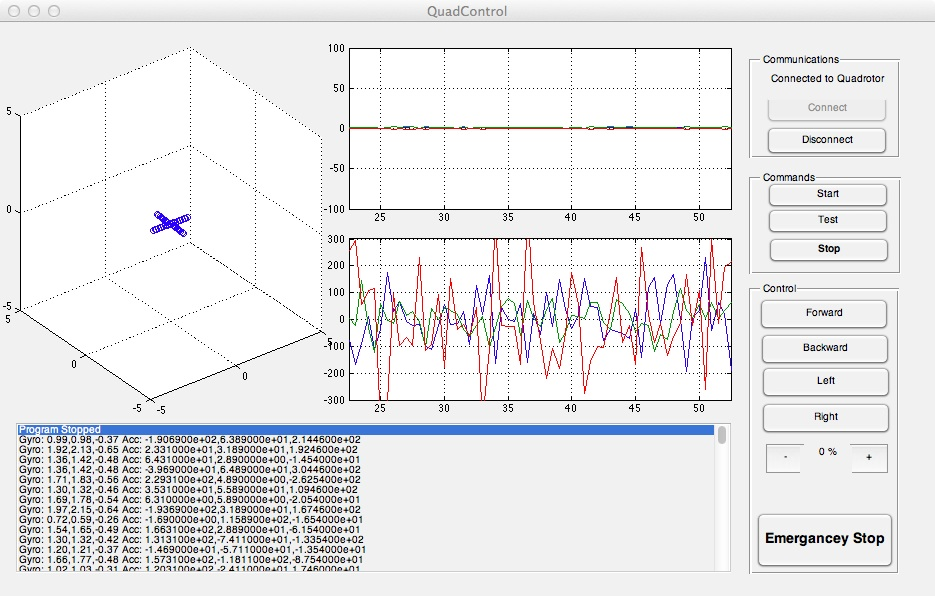

For the Quad rotor to work I need some control over it, I have got my communications link all set up, but I need to sort out what I'm going to send over it. Previously I had just been sending gyroscope or accelerometer readings, but now this needs to become a two way system and for that I need to write some code at both ends that is up to the task.
For the computer side of things I'm going to be using MATLAB, there are 2 reasons I have chosen MATLAB for this task, the first of which is that I have done similar control stuff in MATLAB before, and the second being that there is lots of support out there for this kind of task for MATLAB. With MATLAB having many of the functions that I will need built in all I need to do is join up the dots.

The above shows GUI that I developed to do the task, bellow I'll talk you though its main functions. The user interface was created using the GUIDE (Graphical User Interface Development Environment) that is supplied with MATLAB, which made placing all the parts in place simple case of drop and drag, but then came the part of making them do something. The GUI is made up of the following core components:
- Basic 3D Graphical display of the Quad Rotors orientation
- A plot of the 3 gyroscopes readings over the last 30 seconds
- A plot of the 3 accelerometers readings over the last 30 seconds
- A text display of the data sent and received from the Quad Rotor
- Button down the right hand side to control the quad rotor with